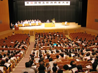
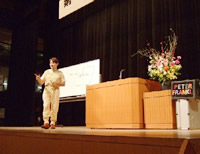

「平和で公正な社会を実現し、明るい未来をつくりましょう！」を大会スローガンに、10月12日埼玉会館で開催されました。
◆実行委員長あいさつ
実行委員会を構成する24団体の紹介が行われ、代表して宮沢実行委員長があいさつしました。その中で、｢私たちは次世代に平和で安心してくらせる社会を引き継ぐ責任があります。この大会が自ら学び、考え発言する場であることを期待します」と呼びかけました。
◆来賓あいさつ
埼玉県の上田知事より、「家族構成の変化で近い将来埼玉県も一人世帯が一番多くなることが予想され、それにあわせた消費者行政を考えなくてならない。犯罪件数は減少しているが詐欺的で巧妙な犯罪が増えていることに危惧している。消費者被害を減らし賢い消費者になるためにも、皆さんの生きた知恵、生きた経験を教えて欲しい。地域のネットワークを生かして共助の社会を作りたい」とのあいさつがありました。
◆「基調報告」「埼玉県への要請書」の提案と確認
伊藤事務局長より「すべての消費者がくらしの大前提である平和を願っており、ゆがみや矛盾のない豊かな社会の土台として公正な社会を実現すること、安心して暮らせる社会、明るい社会を作っていくことを願い大会スローガンにしました。長年こうした消費者の願いを発信し続けてきましたが、残念ながらなかなか実現してきませんでした。しかし、先の参議院選挙の結果は、主権者が政治を動かし始めた事を感じます。実現できるかどうかこれからの私達の運動にかかっています」との提起と、あわせてくらしの問題、年金や医療、核の廃絶、地球温暖化や少子化対策、食の安全などについて提案され、参加者の拍手で確認されました。
◆記念講演
「ニッポンたてヨコ斜め」
～これからどうなる日本～
講師 ピーター・フランクル氏
＜講演要旨＞
日本は狭いというけれど、私の生まれたハンガリーもちっぽけな国です。それでも学者やノーベル賞受賞者が多いのは、言語が関係していると思います。ハンガリー語は難しく、難しい言語が頭(脳)を刺激し活性化させているのだと思います。
世界の言語の中でも日本語の漢字は難しい。にもかかわらずなぜハンガリーの方がノーベル賞受賞者が多いのかというと「教育」の問題があります。ハンガリーでは戦前の教育を本当に反省し、「なぜ」を追及する教育に変えました。試験も口頭試験で、自分の意見、意思を伝える自己表現力と、答えだけでなく過程を大切にしています。たとえ「答え」が合っていても過程が違っていれば点数はもらえなかったのです。
結果と過程、どちらを大切に生きるのが幸せなのでしょうか？結果までたどりつくプロセス、生きている過程が大切なのではないでしょうか。日本でも、お抹茶と和菓子を食べる「お茶」は、風情を楽しみ、過程を楽しんでいます。結果はどうでもいいじゃないですか。人生にはもっと大切なものがあります。
日本はこれまでずっとＧＤＰを考えてきましたが、すでに豊かな国になっており、あまり経済成長を考える必要はありません。日本人は日本の知恵をもっと大事にして欲しい。あなたの人生の主人公はあなた自身です。
◆分科会に370人が参加
午後からは５つの分科会が開かれ、それぞれ助言者の報告、各団体の取り組み、参加者の意見交流・質疑などを行い、各テーマを深めました。
＜第１分科会＞ 不安がいっぱい「日本の食卓」～命を未来につなぐために～
＜第２分科会＞「どうなるこれからの介護？」～介護する人 される人～
＜第３分科会＞「ちょっとまて、その広告は大丈夫？」～表示のうらに潜む甘いワナ～
＜第４分科会＞「次世代に残す環境」～あなたはどのような環境をのぞみますか～
＜第５分科会＞ ｢子どもにとって本当の学力ってなに？｣
|